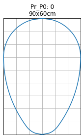
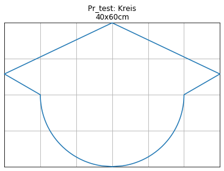

Examples for general profile shapes¶
[1]:
from shape_generator import CrossSection, circle, csv
Example for standard egg cross section¶
[2]:
profile_dimensions = csv("""
label,name,r
P0,0,30
P1,1,35
P2,2,40
P3,3,45
P4,4,50
P5,5,55
P6,6,60
P7,6a,65
""")
unit = 'cm'
profile_dimensions
[2]:
| name | r | |
|---|---|---|
| label | ||
| P0 | 0 | 30 |
| P1 | 1 | 35 |
| P2 | 2 | 40 |
| P3 | 3 | 45 |
| P4 | 4 | 50 |
| P5 | 5 | 55 |
| P6 | 6 | 60 |
| P7 | 6a | 65 |
[3]:
label = 'P0'
name, r = profile_dimensions.loc[label].values
R = 3 * r
roh = r / 2
height = r * 3
width = r * 2
# h1 = roh - (r + roh) / (R - roh) * roh
h1 = r/ 5
cross_section = CrossSection(label=label, long_label=name, width=width, height=height, unit=unit)
cross_section.add(circle(roh, x_m=roh))
cross_section.add(h1)
cross_section.add(circle(R, x_m=2 * r, y_m=-(R - r)))
cross_section.add(2 * r)
cross_section.add(circle(r, x_m=2 * r))
______________________________
Pr_P0 -> 0
[4]:
cross_section.generator(show=True)
0 : sqrt(-(x - 15.0)**2 + 225.0)
1 : (6.0, None)
2 : sqrt(-(x - 60.0)**2 + 8100.0) - 60.0
3 : (60.0, None)
4 : sqrt(-(x - 60.0)**2 + 900.0)
x y
0 0.000000 0.000000
1 1.000000 5.385165
2 2.000000 7.483315
3 3.000000 9.000000
4 4.000000 10.198039
5 5.000000 11.180340
6 6.000000 12.000000
7 6.947368 12.700613
8 7.894737 13.383029
9 8.842105 14.046330
10 9.789474 14.691736
11 10.736842 15.320361
12 11.684211 15.931312
13 12.631579 16.526287
14 13.578947 17.104415
15 14.526316 17.666694
16 15.473684 18.214035
17 16.421053 18.745608
18 17.368421 19.262302
19 18.315789 19.764931
20 19.263158 20.252706
21 20.210526 20.726919
22 21.157895 21.186816
23 22.105263 21.633137
24 23.052632 22.066553
25 24.000000 22.486363
26 24.947368 22.893228
27 25.894737 23.287748
28 26.842105 23.669272
29 27.789474 24.038393
.. ... ...
66 62.812500 29.867920
67 63.750000 29.764702
68 64.687500 29.631447
69 65.625000 29.467938
70 66.562500 29.273540
71 67.500000 29.047375
72 68.437500 28.788889
73 69.375000 28.497533
74 70.312500 28.172019
75 71.250000 27.810744
76 72.187500 27.412637
77 73.125000 26.976552
78 74.062500 26.500192
79 75.000000 25.980762
80 75.937500 25.416140
81 76.875000 24.803919
82 77.812500 24.139856
83 78.750000 23.418742
84 79.687500 22.635871
85 80.625000 21.785531
86 81.562500 20.858575
87 82.500000 19.843135
88 83.437500 18.725922
89 84.375000 17.488836
90 85.312500 16.102877
91 86.250000 14.523688
92 87.187500 12.681193
93 88.125000 10.439558
94 89.062500 7.443128
95 90.000000 0.000000
[96 rows x 2 columns]
[5]:
cross_section.df_abs
[5]:
| x | y | |
|---|---|---|
| 0 | 0.000 | 0.000 |
| 1 | 0.999 | 5.382 |
| 2 | 1.998 | 7.479 |
| 3 | 2.997 | 9.000 |
| 4 | 3.996 | 10.197 |
| 5 | 5.004 | 11.178 |
| 6 | 6.003 | 11.997 |
| 7 | 6.948 | 12.699 |
| 8 | 7.893 | 13.383 |
| 9 | 8.838 | 14.049 |
| 10 | 9.792 | 14.688 |
| 11 | 10.737 | 15.318 |
| 12 | 11.682 | 15.930 |
| 13 | 12.636 | 16.524 |
| 14 | 13.581 | 17.100 |
| 15 | 14.526 | 17.667 |
| 16 | 15.471 | 18.216 |
| 17 | 16.425 | 18.747 |
| 18 | 17.370 | 19.260 |
| 19 | 18.315 | 19.764 |
| 20 | 19.260 | 20.250 |
| 21 | 20.214 | 20.727 |
| 22 | 21.159 | 21.186 |
| 23 | 22.104 | 21.636 |
| 24 | 23.049 | 22.068 |
| 25 | 24.003 | 22.482 |
| 26 | 24.948 | 22.896 |
| 27 | 25.893 | 23.292 |
| 28 | 26.838 | 23.670 |
| 29 | 27.792 | 24.039 |
| ... | ... | ... |
| 66 | 62.811 | 29.871 |
| 67 | 63.747 | 29.763 |
| 68 | 64.692 | 29.628 |
| 69 | 65.628 | 29.466 |
| 70 | 66.564 | 29.277 |
| 71 | 67.500 | 29.043 |
| 72 | 68.436 | 28.791 |
| 73 | 69.372 | 28.494 |
| 74 | 70.308 | 28.170 |
| 75 | 71.253 | 27.810 |
| 76 | 72.189 | 27.414 |
| 77 | 73.125 | 26.973 |
| 78 | 74.061 | 26.496 |
| 79 | 74.997 | 25.983 |
| 80 | 75.942 | 25.416 |
| 81 | 76.878 | 24.804 |
| 82 | 77.814 | 24.138 |
| 83 | 78.750 | 23.418 |
| 84 | 79.686 | 22.635 |
| 85 | 80.622 | 21.789 |
| 86 | 81.558 | 20.862 |
| 87 | 82.503 | 19.845 |
| 88 | 83.439 | 18.729 |
| 89 | 84.375 | 17.487 |
| 90 | 85.311 | 16.101 |
| 91 | 86.247 | 14.526 |
| 92 | 87.192 | 12.681 |
| 93 | 88.128 | 10.440 |
| 94 | 89.064 | 7.443 |
| 95 | 90.000 | 0.000 |
96 rows × 2 columns
[6]:
fig = cross_section.profile_abs_figure()

Example for custom cross section¶
[7]:
no = 'test'
name = 'Kreis'
r = 20 # cm
unit = 'cm'
kreis = CrossSection(label=no, long_label=name, height=2*r, unit=unit)
kreis.add_and_show(circle(r, x_m=r))
______________________________
Pr_test -> Kreis
-----
sqrt(-(x - 20.0)**2 + 400.0)
-----

[8]:
kreis.add_and_show(r,r)
-----
sqrt(-(x - 20.0)**2 + 400.0)
(20.0, 20.0)
-----

[9]:
kreis.add_and_show(30, '°slope')
-----
sqrt(-(x - 20.0)**2 + 400.0)
(20.0, 20.0)
(0.57735, 'slope')
-----

[10]:
kreis.add_and_show(None,1.5*r)
-----
sqrt(-(x - 20.0)**2 + 400.0)
(20.0, 20.0)
(0.57735, 'slope')
(None, 30.0)
-----
